MOCO Montpellier Contemporain
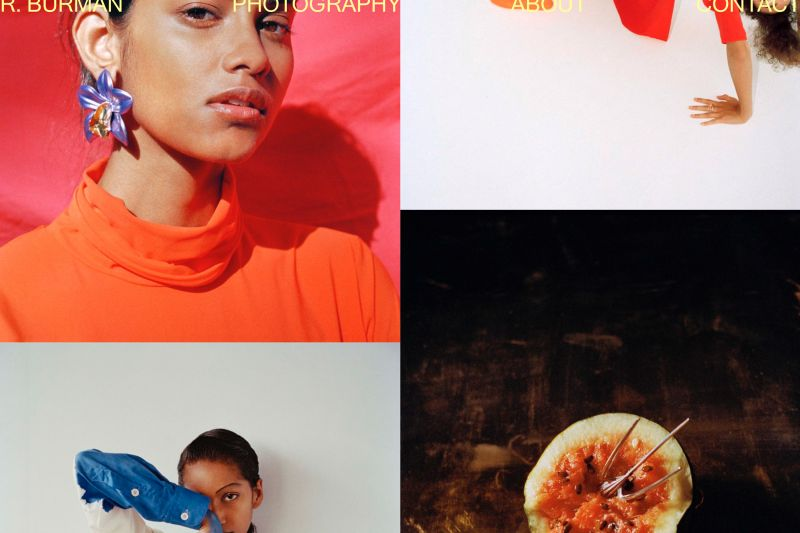
R.Burman photography
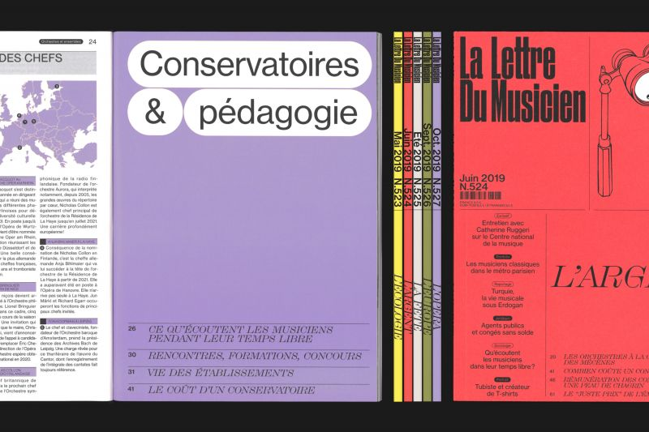
La Lettre du Musicien
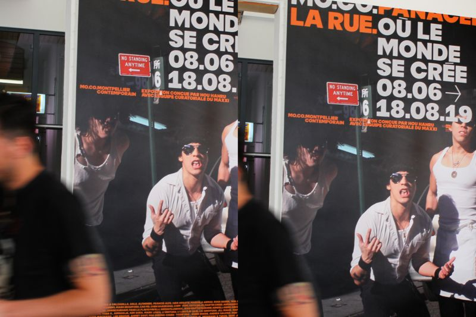
La Rue - MOCO Panacée
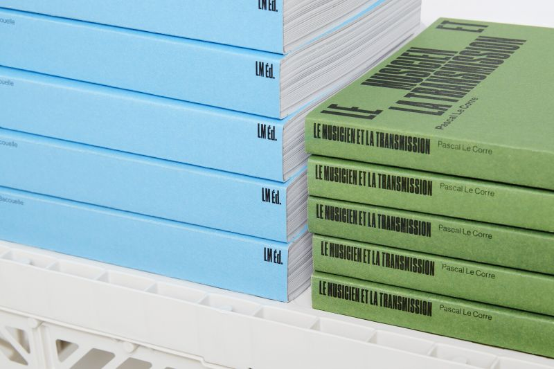
LM éditions
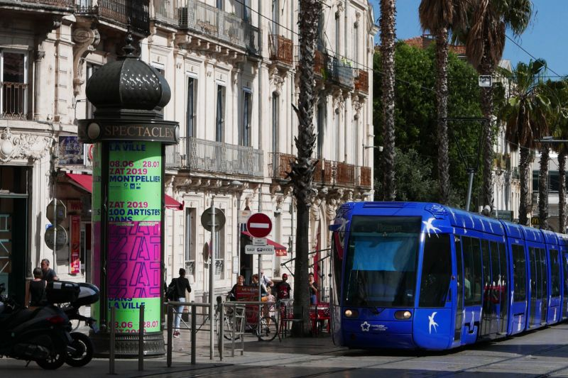
ZAT 100 artistes dans la ville
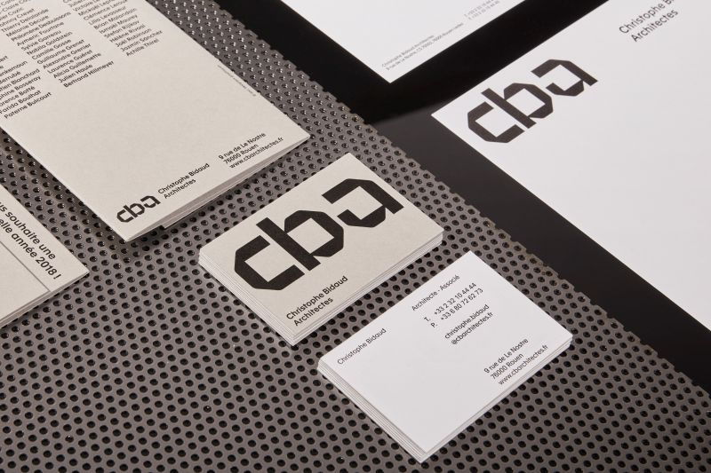
CBA Architectes
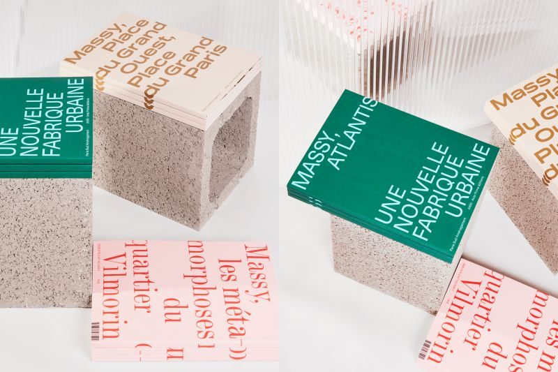
Collection architecture à Massy
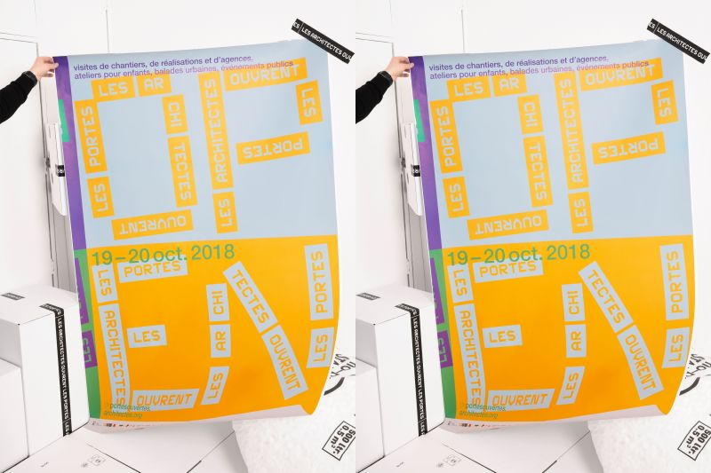
Les architectes ouvrent les portes 18
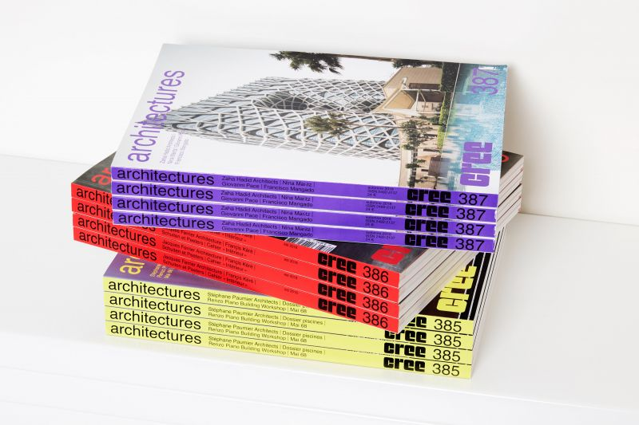
architectures CREE magazine
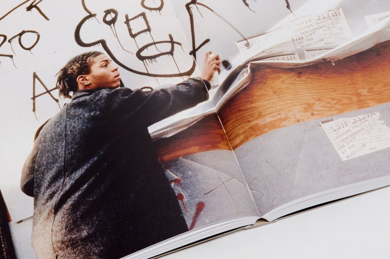
Basquiat à la Fondation Louis Vuitton
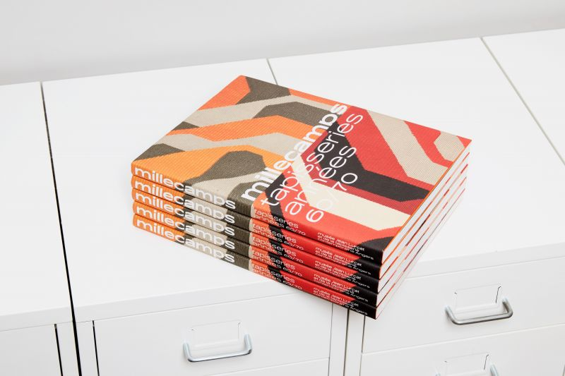
Millecamps, catalogue
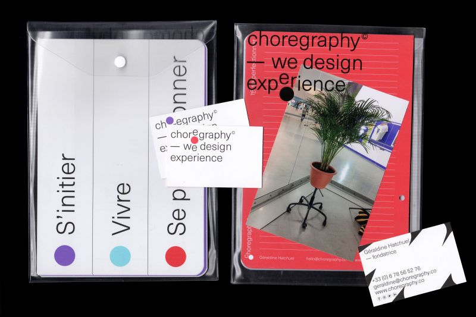
Choregraphy, We design experience
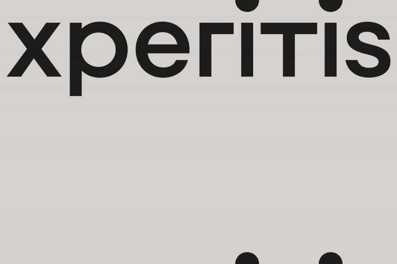
XPERITIS
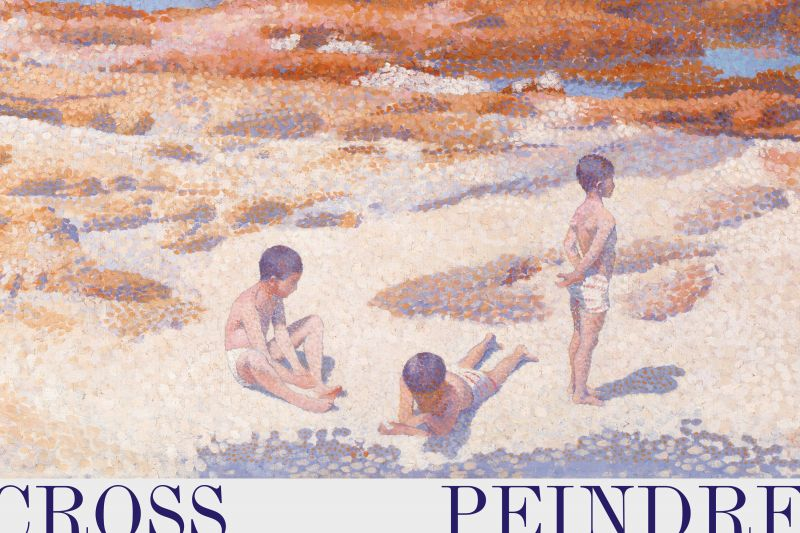
Henri-Edmond Cross à Giverny
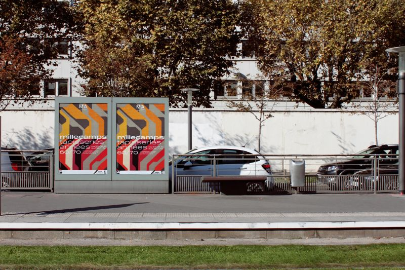
Millecamps, tapisseries années 60-70
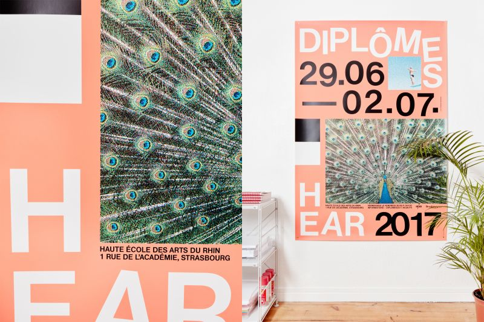
HEAR DIPLÔMES 17
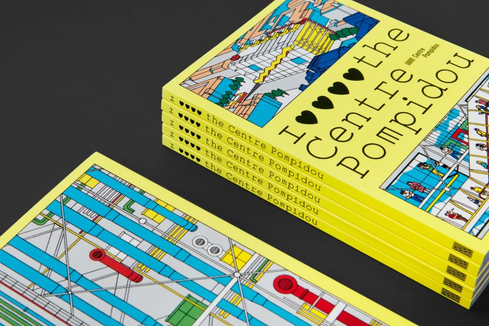
J'aime le Centre Pompidou
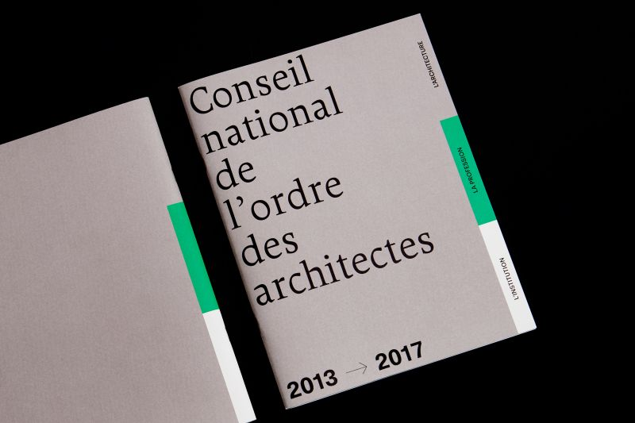
Rapport d'activités CNOA 2013–2017
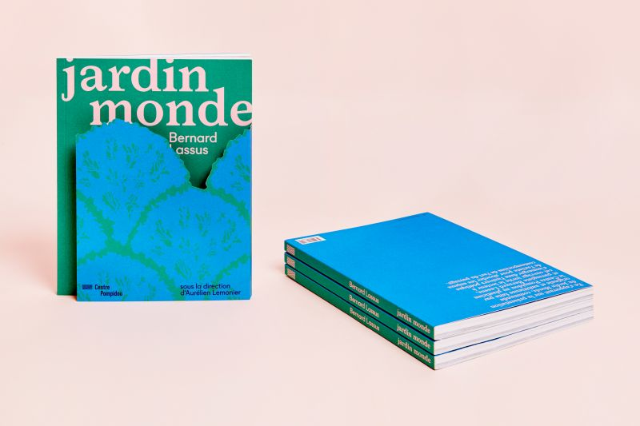
Jardin Monde au Centre Pompidou